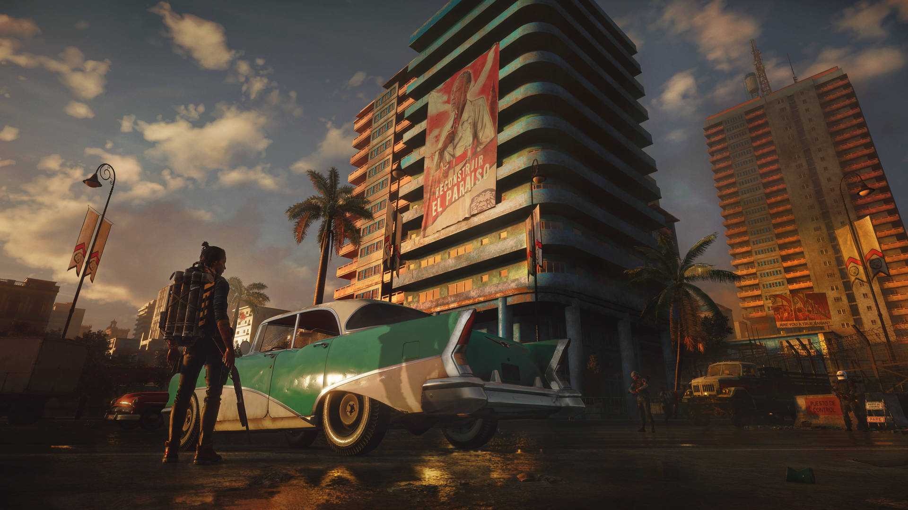
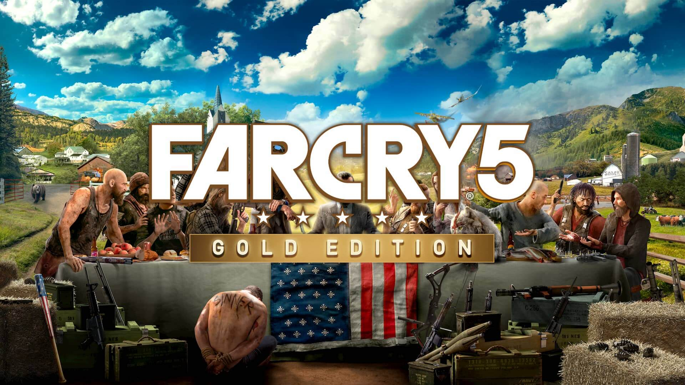

Why FPS Games are so good?
In this era of multiplayer games, First Person Shooting games are still enjoyed by millions around the world. Why is that?
Almost all of the FPS games are heavily story based and as humans we all like to be part of a story even though it is in the form of gaming.The Characteres in FPS games are so grippy that the users usally fall in love with the characters in the game and keep playing it.Top 25 FPS games of all time
Here is one of my favorite FPS games
Far Cry
Far Cry Franchise has 6 editions to its name starting from far cry 1 in 2004 and the latest being Far Cry 6 in 2023.Over 10 Millions copies were sold on the first three months of release of Far Cry 6. Far Cry has millions of fans all over the world along with myself,Far Cry is known for its cool graphics, gorgeous scenery, engaging story and characterization along with interactive story lines.Click here to get a glimpse of Far Cry 6 Story.